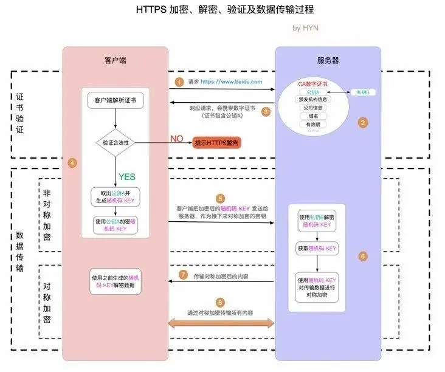
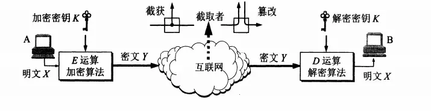

从输入URL到页面加载发生了什么？
- 浏览器查找当前URL是否存在缓存，并比较缓存是否过期。（先判断HTTP请求浏览器是否已缓存）
有缓存
如为强制缓存 ，通过 Expires或Cache-Control：max-age判断该缓存是否过期，未过期，直接使用该资源；Expires和max-age，如果两者同时存在，则被Cache-Control的max-age覆盖。
如为协商缓存 ，请求头部带上相关信息如 if-none-match（Etag）与 if-modified-since(last-modified)，验证缓存是否有效，若有效则返回状态码为 304，若无效则重新返回资源，状态码为 200
- DNS解析URL对应的IP
- 根据IP建立TCP连接（三次握手）（
握手过程见下文） - HTTP发起请求
- 服务器处理请求，浏览器接收HTTP响应
- 渲染页面，构建DOM树
- HTML 解析，生成DOM树
- 根据 CSS 解析生成 CSS 树
- 结合 DOM 树和 CSS 规则树，生成渲染树
- 根据渲染树计算每一个节点的信息（layout布局）
- 根据计算好的信息绘制页面
如果遇到 script 标签，则判断是否含有 defer 或者 async 属性，如果有，异步去下载该资源；如果没有设置，暂停dom的解析，去加载script的资源，然后执行该js代码（ script标签加载和执行会阻塞页面的渲染 ）
- 关闭TCP连接（四次挥手）
http/https
http
http协议又叫超文本传输协议，它是应用层中使用最多的协议，
http与我们常说的socket有什么区别吗？
我们使用的网络可以分为（会话层和表示层可以忽略），每一层使用下一层的功能，并为上一层提供接口，我们经常听说的http协议就是应用层的协议，其中应用层协议包括ftp等等，而应用层还需要使用传输层的协议，http使用的就是tcp协议，http3计划使用udp协议。不过不管是tcp还是udp都是使用网络层的ip协议。不过传输层及以下层都是在操作系统内核中的，不利于我们使用，所以在用户态设计了socket接口来帮助我们使用tcp或者udp的网络协议。而http协议则是已经定义好解析标准的能让我们直接使用的协议。
http1.0
http1.0是个短连接，即每发一次请求，就建立一次连接，一次响应后就释放连接，这种方式简化了http的请求响应，但是却造成了重大的浪费：不能并行请求，每次请求都需要建立连接和释放连接，导致每次请求都需要三次握手和四次挥手。
http1.1
- 长连接: 每个连接完成一次请求后先不关闭，在一定时间内可以发送多次请求。通过设置请求头Connection: keep-alive来实现。
- 管道化技术: 虽然长连接减少了握手消耗，但是每次都要前一次请求完成之后才能发送下一次请求，管道化技术允许在一个请求没有响应之前发送多次请求。不过管道话技术要求响应必须按照请求发送的顺序返回，否则无法解析。存在队头阻塞。实际使用不多。
http2
- 二进制分帧：http2设计出了二进制分帧技术，http1中的数据都是通过文本文本传输的，但是二进制结构更有利于数据处理，因为计算机只认识二进制，所以传输时不需要文本与二进制之间的转换。
- http1中的管道技术虽然支持反多次请求，但是响应必须按照顺序返回，不能实现真正的并发，存在队头阻塞问题。针对这个问题，http2将每个响应分成若干个帧序列，而每个帧序列都有流号，标记属于哪个响应，这样即使每个帧序列乱序到客户端，还是能够根据流id重新组装，解决了http方面的队头阻塞，真正实现多路复用。
- 头部压缩：在大多数时候，我们请求或者响应的数据可能很少（例如ajax请求），但是同样需要传输各种请求头，尤其是cookie。这无疑给http带来负担，而头部压缩就是解决重复请求头发送的问题。
- 服务器推送：在http1中，上一个响应发送完了，服务器才能发送下一个请求，但在http2里，可以将多个响应一起发送。例如在一个html文件中有个多js，css文件，为了快速解析页面，可以直接向客户端推送js文件，从而减少客户端请求的时间。
http2存在的缺陷：http2虽然实现了多路复用，但是并没有解决tcp方面的队头阻塞。而且，同一个连接内多个流传输，可能会导致响应事件时间变长，相比http1容易出现超时重传；再者，h2适合于大量冗余的请求，对于少量请求并没有太大优势。
http3
http3协议使用udp为传输层协议，udp不需要握手就可以直接发送数据，因此udp是不可靠的传输层协议，所以就需要自己实现tcp的流量控制和拥塞控制。
https
http协议都是明文传输的，而且不会对应用数据和主机进行验证，这样即使数据被窃取和篡改我们也不得而知，所以为了保证http的安全，在它的基础上加了TSL/SSL安全协议。形成了我们所说的https协议。

http之所以不安全最大的原因就是使用明文传输，所以加密成了最大的问题，目前分为两大类加密算法。
- 对称加密：DES(分组加密算法)，AES(可以看作是DES的升级版)
- 非对称加密：RSA、DSA

由于目前公钥加密算法的开销比较大，所以一般采用对称加密来保密信息。但是对称加密过程，密钥如何传输？这时可以使用公私钥来进行传输，因为公私钥使用公钥加密，私钥解密，所以只要是对方公钥加密的数据只有对方的私钥才能解密。
http和https的区别
安全角度
http属于明文传输协议，https属于加密传输协议，传输的数据需要经过SSL/TLS加密，因此有更高的安全性。
端口角度
http: 80; https: 443
加密与证书角度
http不需要向服务端申请证书
https在TCP三次握手后，需要进行SSL的握手，协商加密使用的对称加密密钥，还需要向服务端申请证书，浏览器安装对应的根证书。